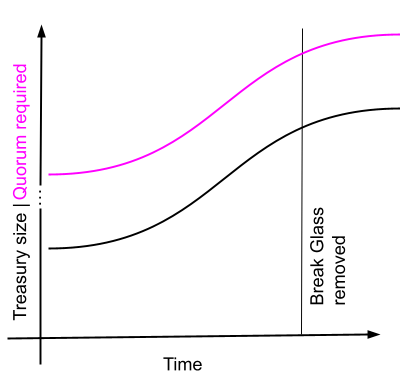
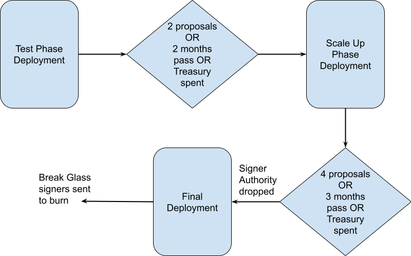
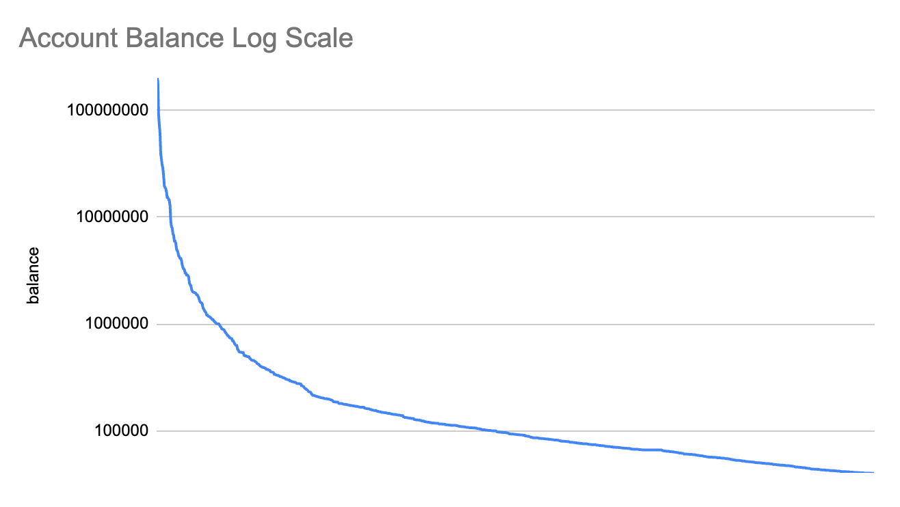

Pre-proposal discussion
Community contributors explore, refine, and gather early sentiment before any formal lifecycle starts.
Candidate parameters for community discussion
The Decentralized Treasury App is a Mina-native ZKApp that lets the community submit, vote on, and execute treasury proposals while the system ramps from guarded test deployment to full community stewardship.
Concept
Mina does not natively support delegated voting like an EVM governor. The DT App solves that with a Mina-native ZKApp for proposal lifecycle, adaptive quorum, vote tallying, and treasury disbursement.
Three failure modes shape the proposal: thresholds can be too high and brick the treasury, too low and invite governance attacks, or the ZKApp can fall out of sync with chain state.
The candidate approach starts small, gathers real participation data, and redeploys with larger treasury slices and stronger thresholds as community activity proves itself.
Proposal lifecycle
The report originally recommended variable lifecycle lengths. The DT App candidate simplifies this: submission, exploration, voting, and cooldown are each one Mina epoch, roughly one week after the MESA update.
Community contributors explore, refine, and gather early sentiment before any formal lifecycle starts.
A formal proposal starts. The snapshot is taken at N-2; by the third day, changes require restarting the governance lifecycle with a new proposal.
Optional KYC/KYB checks happen where required, and proposers refine based on feedback before voting locks.
Stakeholders formally vote. Votes are measured as yay, nay, and abstain, with abstain included only in participation.
Large stakeholders have time to exit stake or hedge. Requests above 5% of the treasury automatically double cooldown for additional scrutiny.
Adaptive thresholds
Thresholds follow a simple S-curve. They rise from 20% to 50% participation and 51% to 70% approval before each deployment modifier scales those values to the current phase.
Approved iff:
(Y + N + A0 >= RequiredParticipation)
AND (Y + N > 0)
AND (Y / (Y + N) >= RequiredApproval)
Y = yay voting weight
N = nay voting weight
A0 = abstain voting weight

Choose a deployment phase and proposal size as a percentage of that phase treasury.
146,779k MINA voting weight
Minimum yay at participation floor
Estimated ask: 2,000k MINA from the selected treasury.
Treasury cadence
The candidate cadence deploys about 55M MINA in total, calculated in the source report as about USD 2.8M using a 14-day MINA price average as of 2026-05-28.
Real-world data, low thresholds, and a meaningful start without putting too much at risk.
About USD 1M worth of MINA, still guarded, with thresholds high enough to require broader activation.
The signer authority is relinquished; after successful cadence, break-glass keys are sent to a burn address.
| Deployment | Treasury k MINA | Pmax / T | Modifier | Pmin supply | Pmax supply | Amin supply | Amax supply | Treasury k USD |
|---|---|---|---|---|---|---|---|---|
| Test Phase | 1,000.00 | 32.21x | 5.00% | 1.00% | 2.50% | 0.50% | 1.75% | 51.18 |
| Scale Up Phase | 20,000.00 | 9.02x | 28.00% | 5.60% | 14.00% | 2.80% | 9.80% | 1,023.55 |
| Final Deployment | 34,000.00 | 8.53x | 45.00% | 9.00% | 22.50% | 4.50% | 15.75% | 1,740.03 |
| Total deployed | 55,000.00 | 2,814.75 |

Safeguards
Five signers can veto, halt, or cancel proposals in emergencies when three signers submit a signed proof to the ZKApp. The proposed initial composition is three Mina Foundation signers, one o(1) Labs signer, and one Aragon X signer.
Clear threat that DT funds will be stolen, frozen, or materially impaired before execution.
Malicious vote coordination, bribery, or unusually narrow outcomes that compromise the decision process.
One-sided value extraction with no plausible pro-protocol rationale.
Critical DT App vulnerabilities, active exploitation, or infrastructure attacks that make operation unsafe.
Malformed payloads, description-payload mismatch, or broken process norms that could cause unintended effects.
Non-intervention. Policy disagreement, taste, ideology, and feasibility concerns are for token holders, not the break-glass signers.
The break glass is removed once community activity reaches sufficient quorum to safeguard funds, with keys sent to a burn address.
Governance reality
The top 10 validators account for 32.95% of voting power in the source report. Kraken alone accounts for 14.9%, though exchanges are assumed unlikely to vote because of compliance constraints.

| Validator | Staked MINA | Voting power |
|---|---|---|
| Kraken | 192,052,586 | 14.90% |
| MINAExplorer | 73,548,574 | 5.71% |
| AuroWallet | 59,194,232 | 4.59% |
| Unlabeled | 39,169,385 | 3.04% |
| Carbonara | 15,470,046 | 1.20% |
| InfStones | 13,495,855 | 1.05% |
| PiconBello | 12,522,562 | 0.97% |
Operations
Aragon is proposed to operate the full application and its dependencies for the first 24 months. Over time, the community should select and fund the operational entities.
Frontend hosting, security updates, UX improvements, archive node DevOps, and workers that keep the ZKApp in sync with chain state.
DevOps is estimated around 40 hours per month. Workers need at least 16 vCPU and 64 GB RAM for monthly tallying and verification windows.
Next steps
The source proposal frames this as a starting point for deliberation before a final deployment proposal.